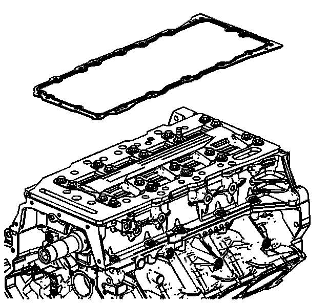
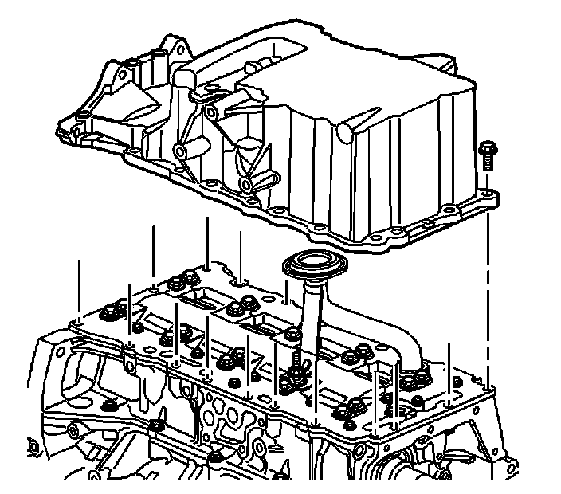

101. Oil Pan Installation
Oil Pan Installation

1. Place a NEW oil pan gasket in place on the oil manifold plate.

2. Position the oil pan onto the lower crankcase.

3. The oil pan must be held flush to 0.50 mm (0.020 in) forward of the rear face of the engine block.

4. Place oil pan fasteners in location as shown:
* Short length bolt (420)
* Medium length bolt (421)
* Long length bolt (422)

Notice: Refer to Fastener Notice (Fastener Notice) .
5. Install the oil pan bolts in the sequence shown.
1. First Pass
Tighten the oil pan bolts to 15 N.m (11 lb ft ) in the sequence shown.
2. Final Pass
Tighten the oil pan bolts to 25 N.m (18 lb ft ) in the sequence shown.
6. Clean off any sealant that has protruded to the exterior of the engine.
7. Install the oil drain plug.
Tighten the oil drain plug to 25 N.m (18 lb ft).
8. Rotate the engine so that the engine valley is facing upward.